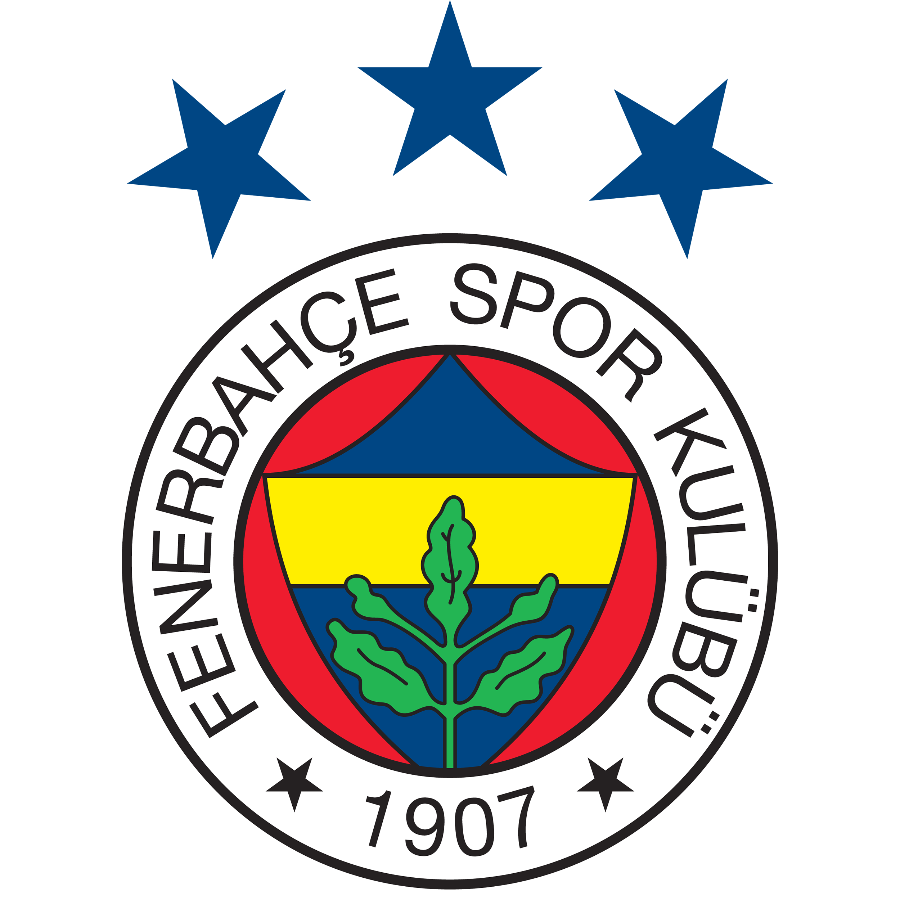

Fenerbahce S.K. (Football Branch)

Fenerbahce S.K.'s logo with three stars each of which represent five league title. Currently, the club has 19 league title, meaning it is only one title away from the fourth star.
Some significant achievements of the club
- 1907 - The club was founded in Istanbul in 1907, and in the same year they joined the Istanbul League.
- 1959 - The Turkish Football Federation founded a professional national league in 1959, Fenerbahce won the first tournament.
- 1960 - Participated in the European Cup for the first time.
- 1963 - Reached to the quarter final of European Cup Winners' Cup, which was the biggest feet achieved by a Turkish team at that time.
- 1966 - In the Balkans Cup (a competition set up for Eastern European clubs from Albania, Bulgaria, Greece, Romania, Turkey and Yugoslavia that existed between the 1960–61 and 1993–94 seasons), the team won the cup, making them the first Turkish club to win a non-domestic competition.
- 2007 - Reached to the quarter finals in UEFA Champions League.
- 2012 - Reached to the semi finals in UEFA Europa League.
- Fenerbahçe have won 19 Turkish Super League titles, 6 Turkish Cups and 9 Turkish Super Cups.